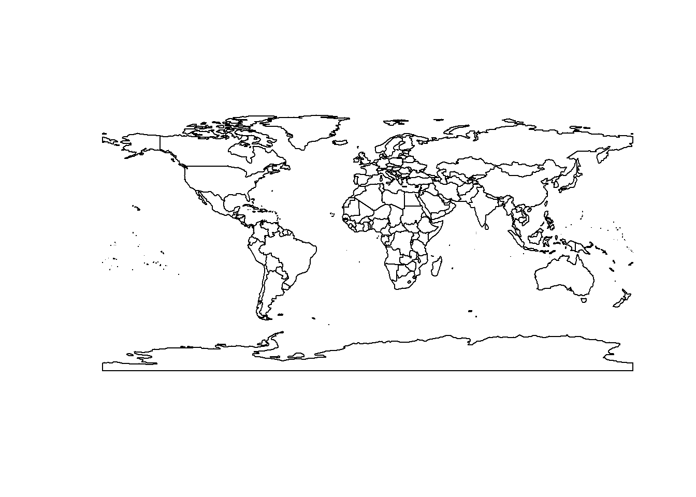
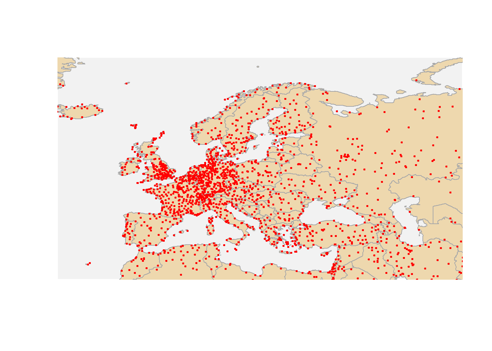
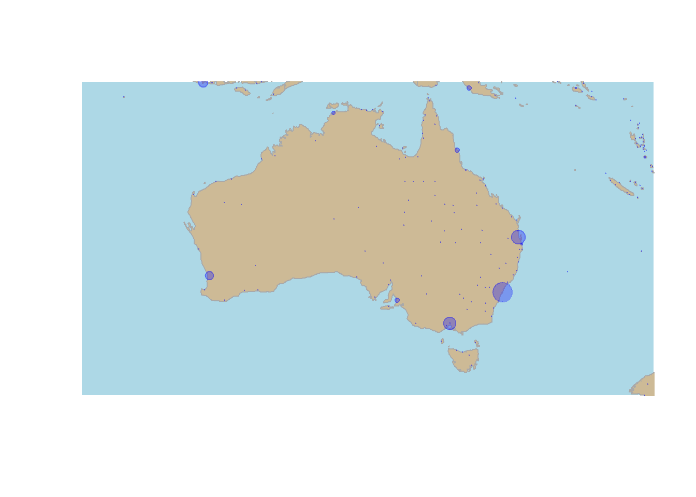

Creating Maps in R
UQ SLC Digital Team
2019-08-02

1 Introduction
This tutorial introduces how to create maps in “R”. The entire code for the sections below can be downloaded here.
2 Preparation and session set up
As all visualizations in this tutorial rely on “R”, it is necessary to install “R”, “RStudio”, and “Tinn-R”. If these programms (or, in the case of “R”, environments) are not already installed on your machine, please search for them in your favorite search engine and add the term “download”. Open any of the first few links and follow the installation instructions (they are easy to follow, do not require any specifications, and are pretty much self-explanatory).
In addition, certain “libraries” or “packages” need to be installed so that the scripts shown below are executed without errors. Before turning to the code below, please install the librariesby running the code below this paragraph. If you have already installed the libraries mentioned below, then you can skip ahead ignore this section. To install the necessary libraries, simply run the following code - it may take some time (between 1 and 5 minutes to install all of the libraries so you do not need to worry if it takes some time).
# clean current workspace
rm(list=ls(all=T))
# set options
options(stringsAsFactors = F) # no automatic data transformation
options("scipen" = 100, "digits" = 4) # supress math annotation
# install libraries
install.packages(c("RgoogleMaps", "ggmap", "mapproj", "sf",
"dplyr", "OpenStreetMap", "devtools"))
# install package from github
devtools::install_github("dkahle/ggmap", ref = "tidyup")Depending on the maps that are used in the visualization, it may also be neccessary to access other data bases. One very useful data base for maps is, of course, Google Maps. However, to access Google Maps materials, installation and setting up other pieces of software is neccessary. How to get access to Google’s data is discussed below. In the following section, methods that do not require installation of software other than “R”.
3 Getting started with maps
The most basic way to display geospacial data is to simply download and display a map. In order to do that, we load the libraries neccessary for extracting and plotting the map, before we can go ahead and actually extracting and ploting the map.
The package “OpenStreetMap” offers a range of maps with different features. To access the OpenStreetMap data base, it is neccessary to install the package. Once the package is installed, we can simply extract the map and define the region we want to plot by defining the longitude and latitude of the upper left and lower right corner of the region we want to display. The argument “minNumTiles” defines the accuracy of the map, the higher the number of tiles, the higher the resolution. The type of map is defined by the “type” argument. The type argument defines from which server the map is extracted. Once we have extracted a map, we can plot it using the “plot” function.
# load library
library(OpenStreetMap)
# extract map
australia <- openmap(c(-8,110),
c(-45,160),
type = "esri",
minNumTiles=6)
# plot map
plot(australia)
In order to obtain different map types, we change the “type” argument. The following options are available for type: “osm”, “osm-bw”,“maptoolkit-topo”, “waze”, “bing”, “stamen-toner”, “stamen-terrain”, “stamen-watercolor”, “osm-german”, “osm-wanderreitkarte”, “mapbox”, “esri”, “esri-topo”, “nps”, “apple-iphoto”, “skobbler”, “hillshade”, “opencyclemap”, “osm-transport”, “osm-public-transport”, “osm-bbike”, “osm-bbike-german”. Unfortunately, not all options work. If they do not work, then an error message is shwn telling us that the number of tiles is not supported.
We can zoom in or out by either changing the “zoom” or the “minNumTiles” arguments - in both cases, the higher the number, the more fine-grained the dispalyed map. Let’s check out some examples for maps of Queensland.
# extract map
queensland1 <- openmap(c(-8,135),
c(-30,160),
type = "osm",
minNumTiles=6)
queensland2 <- openmap(c(-8,135),
c(-30,160),
type = "esri-topo",
minNumTiles=6)
queensland3 <- openmap(c(-8,135),
c(-30,160),
type = "nps",
minNumTiles=6)
# plot maps
par(mfrow = c(1, 3)) # display plots in 1 row/3 columns
plot(queensland1); plot(queensland2); plot(queensland3); par(mfrow = c(1, 1)) # restore original settings
Another data base that is very useful when certaing maps is the “rworldmap” package. The “worldmap” package contains the shape files for countries but also more fine grained-shape files that display the states of selected countries. The most basic data, however, simply represents the shapes of the countries in the world.
Using the “worldmap” package has the advantage that one is not dependent on third parties and their servers but can operate within “R” wihtout being denyed access due to e.g. copy right issues or server maintenance.
# load library
library(rworldmap)
# get map
worldmap <- getMap(resolution = "coarse")
# plot worldmap
plot(worldmap, xlim = c(-180, 180), ylim = c(-90, 90),
asp = 1, wrap=c(-180,180))
The basic map shown above can then be modified and enriched with color coding to convey geospatial data. The following shows how to customize the world map.
4 Customizing Maps
Displaying basic maps is usually less interesting because, typically, we want to add different layers to a map. In order to add layers to a map, we need to have a shape file, i.e. a file which contains information about borders or locations that can then be displayed in different colors.
In other words, we need to have a shape object to add information to the map.
We load the “airports” data set which contains the longitude and latitude of airports across the world.
# load data
airports <- read.delim("D:\\Uni\\UQ\\LADAL\\SLCLADAL.github.io\\data/airports.txt", sep = "\t", header = T)
# inspect data
head(airports)## ID Name City
## 1 1 Goroka Airport Goroka
## 2 2 Madang Airport Madang
## 3 3 Mount Hagen Kagamuga Airport Mount Hagen
## 4 4 Nadzab Airport Nadzab
## 5 5 Port Moresby Jacksons International Airport Port Moresby
## 6 6 Wewak International Airport Wewak
## Country Latitude Longitude
## 1 Papua New Guinea -6.081690 145.392
## 2 Papua New Guinea -5.207080 145.789
## 3 Papua New Guinea -5.826790 144.296
## 4 Papua New Guinea -6.569803 146.726
## 5 Papua New Guinea -9.443380 147.220
## 6 Papua New Guinea -3.583830 143.669To display the locations of airports on a map, we first plot the map and then add a layer of points to indicate the location of airports. In addition, the “plot” functions offers various arguments for customizing the display, e.g. by changing the backgroundcolor (bg), defining the color of borders (borders), defining the color of the shapes (fill and col).
# plot data on world map
plot(worldmap, xlim = c(-80, 160), ylim = c(-50, 100),
asp = 1, bg = "lightblue", col = "black", fill = T)
# add points
points(airports$Longitude, airports$Latitude, col = "red", cex = .01)
It is, of course also possible to show only a part of the map by defining the x- and y-axes limits of the plot window.
# load library
library(rworldmap)
# get map
newmap <- getMap(resolution = "low")
# plot map
plot(newmap, xlim = c(-20, 59), ylim = c(35, 71),
asp = 1, fill = T, border = "darkgray",
col = "wheat2", bg = "gray95")
# add points
points(airports$Longitude, airports$Latitude, col = "red", cex = .5, pch = 20)
This is of course also possible to show Australian airports.
# plot data on world map
plot(worldmap, xlim = c(120, 140), ylim = c(-45, -10),
asp = 1, bg = "lightblue", border = "lightgrey", col = "wheat3",
fill = T, wrap=c(-180,180))
points(airports$Longitude, airports$Latitude,
col = "darkblue", cex = .5, pch = 20)
In addition to the location of airports, it is also possible to show how many flights arrive at an airport. As this information is not provided in the airport data, we load the routes data which contains information about the routes that airlines fly.
# read in routes data
routes <- read.delim("D:\\Uni\\UQ\\LADAL\\SLCLADAL.github.io\\data/routes.txt", sep = "\t", header=T)
# inspect first 6 lines of routes data
head(routes)## airline airlineID sourceAirport sourceAirportID destinationAirport
## 1 2B 410 AER 2965 KZN
## 2 2B 410 ASF 2966 KZN
## 3 2B 410 ASF 2966 MRV
## 4 2B 410 CEK 2968 KZN
## 5 2B 410 CEK 2968 OVB
## 6 2B 410 DME 4029 KZN
## destinationAirportID
## 1 2990
## 2 2990
## 3 2962
## 4 2990
## 5 4078
## 6 2990To show the number of arrivals at an airport (only in terms of how mayn routes end at that airport), we extract the number of routes that end in each airport.
# load library
library(plyr)
# extract number of arrivals
arrivals <- ddply(routes, .(destinationAirportID), "nrow")
names(arrivals)[2] <- "flights"
# inspect data
head(arrivals)## destinationAirportID flights
## 1 \\N 221
## 2 1 5
## 3 10 2
## 4 100 44
## 5 1001 4
## 6 1004 7We can now merge the airports and the arrival data set to combine the information about the location with the information about the number of routes that end at each airport.
# create arrival table
airportA <- merge(airports, arrivals, by.x = "ID", by.y = "destinationAirportID")
# inspect arrival table
head(airportA)## ID Name City
## 1 1 Goroka Airport Goroka
## 2 2 Madang Airport Madang
## 3 3 Mount Hagen Kagamuga Airport Mount Hagen
## 4 4 Nadzab Airport Nadzab
## 5 5 Port Moresby Jacksons International Airport Port Moresby
## 6 6 Wewak International Airport Wewak
## Country Latitude Longitude flights
## 1 Papua New Guinea -6.081690 145.392 5
## 2 Papua New Guinea -5.207080 145.789 8
## 3 Papua New Guinea -5.826790 144.296 12
## 4 Papua New Guinea -6.569803 146.726 11
## 5 Papua New Guinea -9.443380 147.220 50
## 6 Papua New Guinea -3.583830 143.669 6This table allows us to plot not only the location of airports but also the number of routes that end there.
# get map
australia <- getMap(resolution = "low")
# plot data on world map
plot(australia, xlim = c(135, 136), ylim = c(-45, -10),
asp = 1, bg = "lightblue", border = "darkgrey",
col = "wheat3", fill = T)
# add points
points(airportA$Longitude, airportA$Latitude,
# define colors as transparent
col = rgb(red = 0, green = 0, blue = 1, alpha = 0.3),
# define size as number of flights div. by 50
cex = airportA$flights/50, pch = 20)
5 Color Coding Geospatial Information
We can also use color coding of countries to convey information about different features of countries such as their population size (or results of political elecetions, etc.).
# load libraries
library(maps)
library(RColorBrewer)
# load data
worldpopulation <- read.delim("D:\\Uni\\UQ\\LADAL\\SLCLADAL.github.io\\data/worldpopulation.txt", sep = "\t", header = T)
# inspect data
head(worldpopulation)## Country Population
## 1 Afghanistan 7543856
## 2 Albania 1536232
## 3 Algeria 20508642
## 4 American Samoa 58021
## 5 Andorra 69031
## 6 Angola 4535443We use this information about the population size of countries and use color coding to visualize differences in population size by country.
# create a color palette
palette = colorRampPalette(brewer.pal(n=9, name='Oranges'))(nrow(worldpopulation))
# sort the colors in the same order as the countries' populations
palette = palette[rank(-worldpopulation$Population)]
# draw a map of the world
map(database='world', fill = T, border = "darkgray",
col = palette, bg = "gray95", ylim = c(-60, 85))
It is relatively easy to combine color coding with points. However, it is substantially easier if all countries have values. If this is not the case (as in the example below), we need to include an additional step so that countries that are not mentioned also receive a color coding.
In a first setp, the work space is cleared, the options are set, and the relevant libraries are loaded.
# clean current workspace
rm(list=ls(all=T))
# set options
options(stringsAsFactors = F) # no automatic data transformation
options("scipen" = 100, "digits" = 4) # supress math annotation
# load libraries
library(ggmap)
library(maptools)
library(maps)
library(geonames)Then, the data that will be displayed is loaded. In the present case, the data contain countries and cities that I have visited along with their latitude and longitude.
# load data
visited <- read.delim("D:\\Uni\\UQ\\LADAL\\SLCLADAL.github.io\\data/visited.txt", sep = "\t", header = T)
# inspect data
head(visited)## Country ISO3 City Latitude Longitude
## 1 Australia AUS Adelaide -34.94 138.60
## 2 Australia AUS Brisbane -27.45 153.04
## 3 Australia AUS Canberra -35.28 149.13
## 4 Australia AUS Melbourne -37.82 144.97
## 5 Australia AUS Sydney -33.92 151.19
## 6 Austria AUT Innsbruck 47.28 11.41After loading the data, we determine how many cities I have visited in a given country and add this frequency to the data set.
# determine how often a country was visited
ncountry <- as.data.frame(table(visited$ISO3))
colnames(ncountry)[1] <- "ISO3"
# add frequency to visited
visited <- merge(visited, ncountry, by = "ISO3")
# inspect data
head(visited)## ISO3 Country City Latitude Longitude Freq
## 1 ARE United Arab Emirates Abu Dhabi 24.47 54.37 2
## 2 ARE United Arab Emirates Dubai 25.23 55.28 2
## 3 AUS Australia Adelaide -34.94 138.60 5
## 4 AUS Australia Brisbane -27.45 153.04 5
## 5 AUS Australia Canberra -35.28 149.13 5
## 6 AUS Australia Melbourne -37.82 144.97 5The next part is tricky as we do not only need to determine the color for the countries I have visited but also the color for those that I have not visited. In order to do that, we load the data set that underlies the world map that will be displayed.
# load world data for plotting
data(wrld_simpl)
# def. color (bias for contrast)
pal <- colorRampPalette(brewer.pal(6, 'Reds'),
bias = 10)(length(visited$Freq))
pal <- pal[with(visited, findInterval(Freq, sort(unique(Freq))))]
# define color for countries not in visited
countrycolor <- rep(grey(0.95), length(wrld_simpl@data$NAME))
# define colors for countries in visited
countrycolor[match(visited$Country, wrld_simpl@data$NAME)] <- palAfter assigning colors to all countries, we can proceed by plotting the color coded map along with points for the locations of the cities I have visited.
# plot map
plot(wrld_simpl, ylim=c(-40, 85), xlim = c(-180, 180),
mar=c(0,0,0,0), bg="white", border = "gray70", col=countrycolor)
# add points
points(visited$Longitude, visited$Latitude, col="black", pch=20, cex = .5)
A slightly more elegent way to achive the same goal is to plot the information using the “ggplot2” package.
# create maps with ggplot2 using the base world map
mp <- NULL
# create a layer of borders
map <- borders("world", colour="gray70", fill="gray80")
mp <- ggplot() +
map +
geom_point(aes(x=visited$Longitude, y= visited$Latitude),
color="blue", size=1) +
scale_x_continuous(name="Longitude", limits=c(-180, 180)) +
scale_y_continuous(name="Latitude", limits=c(-90, 90)) +
theme_classic()
mp
6 Using and customizing Google maps in R
6.1 The Google API
Unfortunately, Google made accessing their database more restrictive which means that we need to register an API accessing the database. Before we can start creating maps we therefore need to obtain an (API key from Google)[https://developers.google.com/maps/documentation/geocoding/get-api-key]. Go to the (registration page)[https://cloud.google.com/maps-platform/#get-started], and follow the instructions (select all mapping options). The geocoding API is a free service, but you nevertheless need to associate a credit card with the account.
6.2 Installing the ggmap package
The existing CRAN version of ggmap is 2.6.1. This version does unfortunately not yet enable using the Google API. The current version on GitHub is further advanced and fixes the issue. To install the GitHub version, you need to use the devtools package.